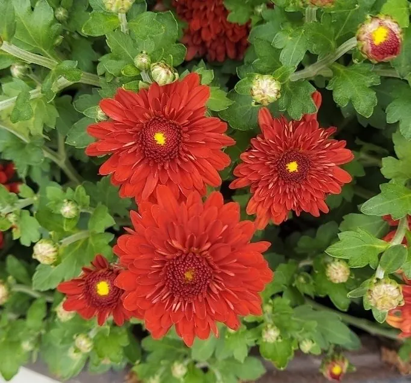

花卉与草本 · 植物界
菊花 Chrysanthemum morifolium

原产中国的菊科多年生草本，秋日开花，花型与花色极其丰富，是中国传统名花之一，既可观赏，也可制茶入药。
- 分类
- 门被子植物门纲木兰纲目菊目科菊科属菊属
- 栖息环境
- 向阳山坡、草地及庭院，喜凉爽通风、阳光充足的环境
- 地理分布
- 原产中国，现遍布世界温带地区，浙江桐乡、河南开封为著名产区
- 保护级别
- 暂无评估
物种志
菊花是菊科菊属多年生宿根草本，株高 60–150 厘米，茎直立，基部常木质化。叶互生，卵形至披针形，边缘有粗大锯齿，叶面被白色短柔毛。头状花序单生或数个聚生茎顶，直径 2–20 厘米，由外围舌状花与中央管状花组成，花型有平瓣、匙瓣、管瓣、畸瓣等，花色涵盖黄、白、红、紫、绿等，花期 9–11 月。
菊花原产中国，已有三千多年的栽培与选育历史，宋代即出现菊谱专著，如今品种数以千计。它喜阳光充足、凉爽通风的环境，为典型的短日照植物，秋季日照缩短后形成花芽；耐寒而不耐酷热，忌积水烂根。菊花可盆栽、地栽或作切花，花可冲泡菊花茶、入药，有清肝明目之说；浙江桐乡、河南开封等地分别以茶菊和菊展闻名，开封菊花会每年吸引大量游客。
形态与习性
- 株高60–150 厘米，茎直立，基部木质化
- 花期9–11 月，分早菊、秋菊与寒菊
- 果期10–12 月，瘦果细小
- 光照喜光，短日照条件促进花芽分化
- 水分喜湿润但忌积水，雨季需及时排水
- 土壤疏松肥沃、排水良好的沙壤土
- 主要用途观赏、切花、菊花茶及药用
趣味知识
- 菊花是短日照植物，秋季昼短夜长才形成花芽，栽培中常通过遮光或补光控制花期。
- 一个菊花的“花”实为头状花序，由成百上千朵舌状花与管状花组成。
- 部分菊花品种可耐 0℃ 左右低温，在初霜后仍能持续开放。
- 开封菊花会与桐乡杭白菊分别以观赏和茶用闻名。